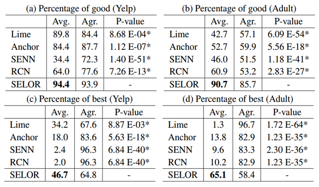
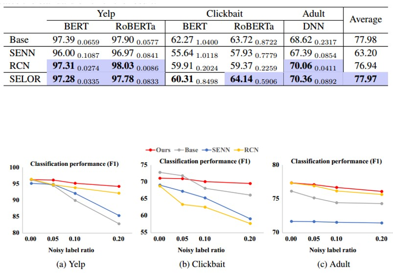
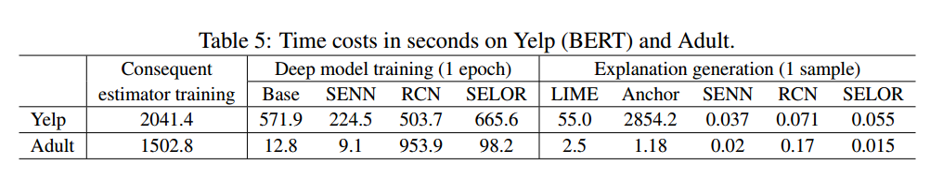

论文：Self-explaining deep models with logic rule reasoning
作者：Seungeon Lee, Xiting Wang, Sungwon Han, Xiaoyuan Yi, Xing Xie, and Meeyoung Cha
发表：NeurIPS 2022
如何保证解释和人类推理过程一致，或解释对人精度（Human Precision）高，是可解释人工智能领域重要、困难却经常被忽视的问题。高的Human Precision要求人看到解释以后，认为人工智能的解释合理，能根据人工智能的解释自然而然地猜出模型的预测结果。它会影响用户的信任，并允许用户与模型密切协作。基于此，我们提出了SELOR，这是一个将自解释功能集成到给定深度模型中的框架，以实现高预测性能和高human precision。大量实验表明，我们的方法比其他方法给出的解释更接近人类决策逻辑，同时保持了深度学习模型的性能。
背景介绍
深度学习在广泛的任务中显示出很高的预测准确性，但其内部工作机制被复杂的模型设计所掩盖。这就提出了一个重要的问题，即深度模型是否合乎道德、值得信赖，或者是否能够在各种条件下按预期执行。目前有不少的事后可解释方法的相关工作，但其提供的解释只是一种近似，而自可解释模型本身具备可解释能力，并且由于解释是模型自身提供，所以可信度较高，但仍然存在解释对人精度不高的问题。
本文中提出了达到高对人精度的两个条件，说明了逻辑规则形式的解释天然能够满足这两个条件。基于此，微软亚洲研究院的研究员们提出了一个基于逻辑规则的自可解释深度学习框架。此框架的优点如下：
1）模型无关：能够将给定的深度模型升级成为以逻辑规则推理的自可解释深度模型
2）对人精度高：用户实验表明本文提出的自可解释模型的解释与人推理逻辑相似性，相较于现有方法有显著提高
3）预测准确性高：升级后的自可解释模型的准确性和原模型没有显著差别
4）鲁棒性高：升级后的自可解释模型比原始黑盒模型对噪音更加鲁棒
5）容易融入用户反馈：不需要重新训练模型，用户就能够修改模型的预测逻辑
相关工作
- Post-Hoc Explanations
设计方法：SELOR
SELOR是Self-Explaining with LOgic rule Reasoning的简称,通过将给定的深度模型升级为可自我解释的版本，提高了解释的可信任度，再通过逻辑规则推理，使得规则具有高对人精度。下面分成两个部分介绍。
Self-explaining
首先，本文对黑盒模型进行了一个升级，变成了一个自可解释的版本。这个自可解释的方法的好处有：
- 我们可以信任模型的解释，因为解释是自己给出的，不是第三方方法近似给出。
- 它可以很好地融入用户的反馈，融入模型内部的解释提供了一个把手，让我们可以去操纵这个模型。
但是如果只有self-explaining，模型会倾向从本身的角度给出解释，而不能让其以人类容易理解的形式给出。即低具有较低的human precision。例如 一篇 NeurIPS 18年的论文介绍的SENN，作者进行用户调查后发现有超过30%的解释，人们在看到解释的时候不能正确地猜到模型的预测结果。
Logic rule reasoning
为了解决低对人精确度的问题，作者提出用逻辑规则推理的方法给出解释。
Logic rules主要由基本的解释单元和逻辑连接部分构成。使用logic rule是因为其和人类的决策逻辑类似，而且在很多场景中被使用来代替模型进行决策。人类在这个过程中只需要定义逻辑规则的形式，比如基础单元是词，逻辑连接部分包括and和or，最大规则长度是4等等。给出信息后模型从所有可能的逻辑规则中进行自动的挑选，选出预测准确性和对人精度都很高的一些规则。
具体实现框架
首先，黑盒模型的情况下，用户输入一个句子，然后用深度学习模型得到这个句子的embedding，最后用一个预测层把隐向量映射到预测结果。本文会将黑盒模型的预测层换成一个规则前提生成器（antecedent generator），它会在所有可能的规则的前提中挑选一个作为对预测结果的解释。

然后，通过consequent estimator即可得到该解释对应的最终结果。具体过程如图所示，得到了antecedent以后，会找到所有符合这个antecedent的实例，然后去看一下他们的标签，发现它们百分之90都是正面情感，因此得到结论，是正面情感，有90%的概率。

这里对应的antecedent 和consequent组合在一起就得到了最终的logic rule。
实验
本文通过多次实验，与两种自解释模型SENN和RCN在准确性、鲁棒性、可解释性和效率方面进行了比较。与LIME和Anchor两种事后可解释方法比较了可解释性和效率。
对人精度
实验设置：招募多名英语母语人士，随机选择50条Yelp评论和50个adult样本，并为每个评论及样本提供了从不同可解释方法获得的五种解释，每个参与者来评判这个解释是否良好，或者是否是最佳解释。
实验结果：

可以看到，SELOR的良好解释比例最高，被选为最好的解释的频率也是最高的。
预测表现和鲁棒性
实验设置：NLP数据集中使用BERT和RoBERTa作为骨干网络，而表格数据集中使用3层DNN，使用PR-AUC的值来评估预测表现。通过对数据集随机20%的样本进行标签的反转设置噪声，使用F1 score的值对鲁棒性进行评估。
实验结果：

这里的Base是一种不可解释的模型。通常来说不可解释模型的预测准确性最高，但这里可以看到SELOR实现了与不可解释基础模型相当的平均性能。说明logic rule没有限制能力，只把模型做决策的范围限定到更合理的空间。
SELOR对噪声标签也具有更好的鲁棒性，F1 score会比黑盒模型高10%。
效率及其他
实验设置：与其他几种方法比较模型训练时间，以及与自解释模型比较生成解释的时长。
实验结果：
SELOR的训练时间是比普通黑盒模型多了16%，而且随着深度学习模型变得复杂，和黑盒模型的差距会越来越小。但是该方法需要额外的时间训练neural consequent estimator，不过对于每个数据集只需要进行一次训练并且可以被重用。salor生成解释的速度也会比事后可解释方法快很多。
此外，Selor可以不经过模型的重新训练就进行修改和控制，比如删除一些有偏见错误的规则解释，模型就会重新选择其他的规则，预测结果也会进行相应的改变，也就是能及时通过用户的反馈进行调整。
局限性和未来工作讨论
适用性：
1.论文实验只使用了表格和自然语言数据集。
2.但也可以用于graphs，如果数据集中有很明确的解释基本单元，如词，点，边。如果用于image的数据，每一个pixel作为一个解释，其意义也不太清晰。
3.对于更复杂的场景比如推荐系统，在feature特别多的情况下，就不一定能抽取出具有代表性的规则 。所以需要进行feature learning，自己获取解释的基本单元，而不是让人指定。
规则的种类：
1.当前使用的逻辑简单，只涉及最底层的一些逻辑单元和他们的基本组合。比如not and good推出negative sentiment， 就不会深层次的推理出认为not是作为一个否定词，起到让good取反的效果，
2.逻辑规则的覆盖是比较低的，比如在Yepl数据集中，awesome AND tasty => positive sentiment只能在0.37%的样本中使用。所以未来可以研究使用更高级别的逻辑推理的规则，比如first-order logic一阶逻辑，模型可能就会直接找到高级规则模式，比如“a negation word AND a positive sentiment word” => negative sentiment。而不是列出具体的not和good。
总结
这篇文章提出的框架主要针对于解决模型的可解释能力的一些局限性 ，除了提高解释的精确度以外，还发现了其他同类论文中的方法的缺点，来提出一个对人精度这样一个概念，并且通过融入逻辑规则来实现了生成解释的一个高对人精度。在实验部分，也比较了多种类型的模型以及方法，除了基础的黑盒模型以外，也和几种常见的可解释模型和事后可解释方法在各自擅长的特性上进行了比较，得到了很有说服力的结论。
✉️ zjuvis@cad.zju.edu.cn